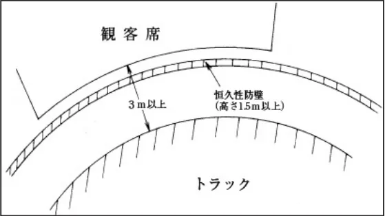
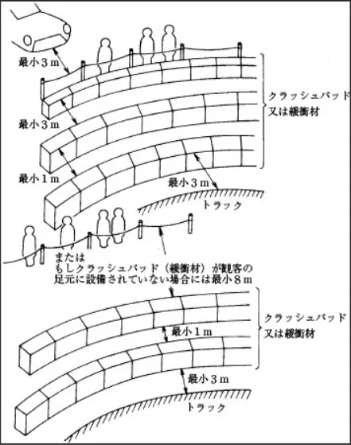

国内カートコース公認規定_20250401
P.1１９７２年 １月 １日制 定１９９０年１０月２３日改 定１９９１年１０月２３日改 定１９９３年 ７月２１日改 定１９９４年１０月１３日改 定１９９５年 ４月 １日施 行１９９５年 ７月 ５日改 定１９９６年 １月 １日施 行
１９９７年１０月２３日改 定１９９８年 １月 １日施 行２００２年１２月 ２日改 正２００３年 ４月 １日施 行２０１２年 ７月２６日改 定２０１３年 １月 １日施 行2025年 4月 1日改定施行
国内カートコース公認規定
第１条 総則
一般社団法人日本自動車連盟（以下「ＪＡＦ」と言う。）は、カートレース競技の公正と安全を確保するため、国内のサーキットの公認に関し、国際カート委員会（以下「ＣＩＫ－ＦＩＡ」と言う。）の国際カート規則およびＪＡＦ国内カート競技規則に基づき、本規定を定める。
ＣＩＫ－ＦＩＡによる国際公認に関わる事項については、ＣＩＫ－ＦＩＡの定める規則・基準等に拠るものとする。
第２条 公認および競技の開催
公認カート競技に使用されるコースは、ＣＩＫ－ＦＩＡまたはＪＡＦの公認を必要とする。
ＣＩＫ－ＦＩＡにより公認されたサーキットを「国際公認カートサーキット」と言う。ＪＡＦにより公認されたサーキットを「国内公認カートコース」と言う。
国際公認カートサーキットでは、国際格式以下の公認レース競技を開催することができる。
国内公認カートコースでは、国内格式以下の公認カート競技を開催することができる。
第３条 コースの種別
国内公認カートコースは、諸設備の状態に拠って以下の２種類に分類される。
１．常設：カートコースの諸設備が常設で、常時使用できるコース
２．臨時：カートコースの諸設備が臨時的で、特定の競技会に使用するために一時的に準備されるコース
第４条 コース公認の格式
カートコースの公認は、開催し得る競技会に応じて以下の３格式に分類される。
１．国 内：国内格式以下の公認カート競技を開催することができる。
２．準国内：準国内格式以下の公認カート競技を開催することができる。
３．制限付：制限付格式以下の公認カート競技を開催することができる。
第５条 走路の種別
カートコースは、走路の条件によって以下の２種類に分類される。
１．第１種コース：本規定第11条の規定に合致したもの。
２．第２種コース：本規定に定める以外のコース。
第６条 公認申請の資格
ＪＡＦにカートコースの公認申請を行う者（以下「公認申請者」と言う。）の資格は、カートコース公認の格式により、以下の通りとする。なお公認後、公認申請者がその資格を失った場合、その時点で当該カートコースの公認は無効となる。
１．国内：
申請するカートコースを所有する法人・団体または当該カートコース運営を委任された法人・団体で、ＪＡＦ公認カートコース団体またはＪＡＦ加盟カートコース団体
２．準国内：
１）申請するカートコースを所有する法人・団体、当該カートコース運営を委任された法人・団体または公認期間を通じ有効な当該カートコースの所有者と使用契約を得た法人・団体で、ＪＡＦ公認カートコース団体またはＪ ＡＦ加盟カートコース団体
２）申請するカートコースの所有者から公認期間を通じ有効な使用契約を得たＪＡＦ公認カートクラブまたはＪＡ Ｆ加盟カートクラブ
３．制限付：
１）申請するカートコースを所有する法人・団体、当該カートコース運営を委任された法人・団体または公認期間を通じ有効な当該カートコースの所有者と使用契約を得た法人・団体で、ＪＡＦ公認カートコース団体またはＪ
P.2ＡＦ加盟カートコース団体
２）申請するカートコースの所有者から競技会開催に必要となる期間中有効な使用契約を得たＪＡＦ公認カートクラブ、ＪＡＦ加盟カートクラブまたはＪＡＦ準加盟カートクラブ
第７条 公認の手続き
国内カートコースの公認申請手続きは、以下の通りとする。
１．申請手続き
公認申請者は、所定の申請に必要事項を記入し、以下の添付書類と所定の申請料を添えて競技会開催の３ヶ月前までにＪＡＦに提出すること。
また、更新手続きは公認の有効期間が満了する年の11月末日までに所定の申請に必要事項を記入し、添付書類と所定の申請料を添えてＪＡＦに提出すること。
※添付書類については電子媒体にて作成したものを提出してもよい。その場合は、提出方法について予めＪＡＦに確認すること。
２．添付書類（各１部）
１）競技内容説明書：（新規または変更のある場合のみ提出）
開催を意図するカート競技およびその参加車両区分を詳細に記入すること。
なお、臨時カートコースの場合は当該競技会の特別規則書草案を添付して提出すること。
２）案内図：（新規または変更のある場合のみ提出）
50,000分の１以上の正確な地図に次の所在を記入すること。
（1）サーキットの位置
（2）応需病院（指定の救急病院）の位置
（3）主要道路からの進入路（および／または最寄りの鉄道駅からの進入路）
（4）消防署
（5）警察署
３）カートコースの図面：（新規または変更のある場合のみ提出）
カートコースの図面には次の事項を明記すること。
（1）カートコースの設定
①周回方向
②横断勾配
③縦断勾配
④曲率
（2）ライン
①スタートライン
②フィニッシュライン
③コントロールライン
（3）競技用施設
①レース管制室
②事務局
③計時室
④審査委員会室
⑤マーシャルポスト
⑥スターターボックス
⑦パドック
⑧車検場
⑨監視カメラ
（4）設備
①ピット進入警告装置
②監視カメラ
（5）ピットエリア
①ピット入口ロード
P.3②ピット出口ロード
③ピットロード
（6）防護体およびトラックサイド
①コンクリートウォール
②ガードレール
③タイヤバリア
④①〜③以外の第１防護体
⑤セーフティゾーン（ランオフエリア／退避地帯）
・グラベルベッド
・アスファルト
⑥カーヴ（縁石）掲載
⑦サービスロード
⑧アクセスポイント
⑨観客席
⑩連絡通路
⑪橋梁
（7）その他
①医務室
②ヘリポート
③駐車場
④ガソリンスタンド
⑤メディアセンター
⑥ブリーフィングルーム
４）コースおよびその施設の説明書：（新規または変更のある場合のみ提出）
次の事項を詳細に記載すること。
（１） コース
①トラックの全長（ｍ）
※トラックの全長は、幅員の中心線をもってｍ単位まで測定する。
②コースの幅員
・トラック 最大（ｍ）〜最小（ｍ）
・セーフティゾーン（ランオフエリア／退避地帯）最大（ｍ）〜最小（ｍ）
③カートコース概要：
・総面積（m
2）
2）
・トラック面積（m
2）
・ピット面積（m
2）
・パドック面積（m
2）
・車検場面積（m
・駐車場面積（m
2）
（2）灯火信号
①スタート灯火信号概要
②ポスト灯火信号概要
（3）救急施設
①医務室概要
②応需病院（指定の救急病院）概要（カートコースからの距離および所要時間を含む）
③設備・備品
④救急車保有台数
⑤救助用車両概要と保有台数
⑥消火器概要と保有数
（4）観客用施設
P.4①総収容観客数
②総スタンド席数
③駐車場収容台数（観客用）
５）施設賠償保険の写し
６）コース使用契約書写し：
コースの所有者と公認申請者が異なる場合には、申請する公認期間満了まで有効なコース使用に関する両者間の契約内容を証明する書面の写しを提出のこと。
７）その他ＪＡＦの求める資料
第８条 サーキットの査察
ＪＡＦは、第11条安全基準に従い、コース査察を行い、安全事項に関する勧告指導を行う。なお、本査察はＪＡＦがコースの安全事項について勧告指導を行う目的で実施されるものであり、査察を行ったコースにおいて事故が発生しても、ＪＡＦはなんら責任を負うものではない。
１．査察
１）義務づけられる査察
（1）ＪＡＦ公認カートコースとして新規申請および更新申請を行う場合。
（2）既存のＪＡＦ公認カートコースでコースあるいは施設の変更を行い、ＪＡＦが必要と認めた場合。
（3）申請時に安全施設が暫定的である場合。
この場合公認申請者ならびに競技会オーガナイザーは競技会前日までに査察を受けなくてはならない。
２）臨時に行われる査察
（1）重大な事故が発生した場合。
（2）公認申請者または競技会オーガナイザーより特に要請があり、ＪＡＦが必要と認めた場合。（査察にかかる費用は要請者の負担とする。）
（3）その他ＪＡＦが特に必要と認めた場合。
２．査察員
査察は、ＪＡＦが指名するＪＡＦカート部会委員またはその他の適格者によって実施される。査察中、関係者以外の立ち合いは許されない。
３．査察項目
査察は次の項目について行われる。
１）当該カートコースに適合する最高位の公認カート競技の格式の決定
２）当該カートコースに適合するカート車両の区分と最大出走台数の算定
３）防護壁を含むコース状況全般
４）観客の防護施設
５）消火および救急医療施設、車両および器具
６）場内通信設備全般
７）競技のための施設（パドック、ピット、車検場、駐車場）
８）救急・搬送車両専用通路
４．査察実施に関する確認事項
ＪＡＦは公認申請者との間で査察の日程、経費、およびその他実施に必要な事項について連絡、確認を行う。
第９条 査察報告
ＪＡＦは、査察終了後、直ちに査察報告書を公認申請者に送付する。
公認申請者は、査察報告書に記載された事項に関して、受領した日から20日以内に意見を申し立てることができる。
この期限内に意見の申し立てがない場合には、その報告書は最終のものとされ、必要とされる改修、その完成期限など、報告書に記載されている事項全てを公認申請者が受け入れたものとする。
査察報告書の内容に関してＪＡＦと公認申請者との間に見解の相違がある場合には、ＪＡＦが検討し、最終決定を行う。
もしカートコースに複数のレイアウトがなされている場合、公認は査察を受けた部分に対してのみ有効である。
第10条 ライセンスの発給
すべての勧告指導および最終査察報告書による必要条件を満たしているカートコースに対し、その時点における安全事項を公認の有効期間中継続して保持することを条件に「ＪＡＦ国内公認カートコースライセンス」（以下「ライセン
P.5ス」と言う。）が発給される。
１．ライセンスの内容
１）公認の種別
２）有効期間
３）トラックの全長
４）周回方向
５）最大決勝出走台数
６）開催可能競技会格式
７）出走可能車両区分
８）その他の条件
２．公認有効期間
常設および準常設カートコースの許可証の有効期間は、申請に基づきライセンス発給日からその年の12月31日または翌々年の12月31日まで認められる。
臨時カートコースの公認の有効期間は、原則として当該競技会の開催中に限られる。
第11条 安全基準
１．通則
１）本基準はＪＡＦ公認のカート競技を開催するコースとして事前に満足しておくべき条件を定めたものである。
２）ＪＡＦはカートコース公認にあたり本基準に従い査察を行い、既設のカートコースについては過去の運営上の経験と実績を考慮し、また新設のカートコースについてはそのカートコースの立地条件および運営のための安全面等を調査した後、代案または特例を認めることができる。
２．コースの基準
以下の基準が適用される。
１）走路の全長：
（1）最短 制限付格式公認カートコース 全クラス 400ｍ
準国内格式公認カートコース 全クラス 600ｍ
国内格式公認カートコース 全クラス 800ｍ
ただし、2013年12月31日以前に公認されたコースには適用しない。
（2）最長 1,500ｍ
（3）直線の距離 最大 170ｍ
２）スタートラインを設置する直線路
（1）スタートラインから第１コーナーまでは50ｍ以上であること。
（2）スタートラインから手前の最終コーナーまでは50ｍ以上であることが望ましい。
（3）スタートラインから第１コーナーまでの幅員は最小８ｍ以上とすることが望ましい。また、スターターがすべてのカートの動きをひとめで見通せる状態のコース上でなければ幅員に関係なくスタートラインとして使用してはならない。
３）走路の幅員：
（1）最小 ７ｍ
ただし、1993年12月31日以前に公認されたコースには適用しない。
（2）最大 12ｍ ただし1.5ｍの余裕を認める。
４）路面の勾配
（１）縦方向 最大 ５％
（2）横方向 内側に対して 最大 10％
５）設けるべき曲線部の数：
準国内公認以下およびジュニア国内開催コースは５ヶ所以上、うち２ヶ所は90°以上とする。
６）路面
全コースについて同一とし、舗装とする。
７）セーフティーゾーン（ランオフエリア／退避地帯）
（1）セーフティーゾーンはトラックの側縁から測定した距離が２ｍ以上なければならず、またセーフティーゾーンの外側にはフェンスまたは壁がなければならない。
P.6（2）平行するコース間の距離は、それぞれの側縁から４ｍ以上離れていなければならない。
（3）高速コーナーおよび下り勾配の最後に設けられたコーナーの外側は、コースの側縁から５ｍ以上のセーフティーゾーンを必要とする。
（4）コースとピットロードの間は２ｍ以上のセーフティーゾーンを設けなければならない。
（5）上記（１）〜（4）のセーフティーゾーンの距離を満たしていないコースにあっては、必要とおもわれる箇所にクラッシュパッド、またはその他の安全保持に効果のある方法でそれを補い、かつＪＡＦの派遣する査察委員によって、その安全性が承認されなければならない。
なお、上記の条件を満たし得るコースにおいても査察委員が必要と認めた箇所は、安全を期するために保護物の設置が義務づけられる。
８）ピットおよびピットロード
（1）ピットエリアはパドックの延長上にあってはならず、明確に区分された独立面積を有していなければならない。
（2）ピットロードの幅員は２ｍ〜３ｍとする。
（3）ピットイン、ピットアウトのそれぞれのコースに接続する部分は、通常走行ラインよりはずれた地点に設けなければならない。また、ピットアウトの際ドライバーの視野を妨げるような施設をコースとの間に設けてはならない。
（4）ピットロードはピットイン、ピットアウトするドライバーが完全に見通せる設計でなければならない。
（5）必要に応じ車両の速度を減らすことを目的としてピットロードにシケインを設けること。
９）スタートライン手前25ｍの位置にイエローラインを引くこと。
10）競技中、車両に対し音量測定を実施するため下記に従い音量測定場所を設置すること。
11）パドック
パドックは独立しそのコースの出走可能台数に見合った適当な面積を持ち、ピットおよび駐車場等と混同されるような使い方は認められない。
12）灯火信号：
スタート信号は次の要件に基づく灯火信号を使用することを強く推奨する。
（１）スターティンググリッドの前方10ｍ〜15ｍの場所に設置すること。
（2）トラックの上方2.5ｍ〜3.5ｍの高さに設置すること。
13）競技監視施設
（１）国内格式公認コース：
①トラック路面からの高さが３ｍ以上の視点が得られ、且つコース全体を監視できるコントロールタワーを設置すること。
②主要なコーナーには監視ポストを設置し、コース委員（ポスト要員）は２名以上待機させることが望ましい。また監視ポストの防護は適宜実施すること。
（2）準国内格式公認コース：
①すべてのコースが見わたせる競技運営を監視できる施設を設けること。
②コース委員（ポスト要員）を防護できるようなコーナーポストを常設すること。
（3）制限付格式公認コース：
上記（2）準国内格式公認コースに準ずる。
14）計時施設
計時はコントロールタワー内にて行うことが望ましいが、少なくとも他の場所から完全に隔離された施設の中で行わなければならず、競技役員以外の者が自由に出入りできる構造であってはならない。
15）計時装置
（1）国内格式公認コース：自動計測装置を備えること。併せてバックアップ体制を確立し故障等による計測不能が発生した場合、異なる自動計測装置または光電管装置や手動等による計測が可能となる措置を講じること。
（2）準国内格式公認コース：自動計測装置を備えることを強く推奨する。光電管装置や手動等による計測装置を備えること。併せてバックアップ体制を確立し故障等による計測不能が発生した場合、異なる光電管装置または手動等による計測が可能となる措置を講じること。
（3）制限付格式公認コース：自動計測装置を備えることを強く推奨する。光電管装置や手動等による計測装置
P.7を備えること。併せてバックアップ体制を確立し故障等による計測不能が発生した場合、異なる光電管装置または手動等による計測が可能となる措置を講じること。
16）消火施設
適宜、消火器または消火施設を設けること。
17）救急施設
（１）国内格式公認コース：
①救急施設を設置するとともに、少なくとも２台以上の救急車を配備すること。
②医師団長の他に応急手当のできる有資格者１名以上が、上記施設に常駐していなければならない。
③救急施設には別表１に示す薬品および医療設備を備えることが義務づけられる。また、同施設は参加者の手当てに限らず、参加関係者、役員、観客も含めて応急手当ができる体制であることが望ましい。
別表１
| 器具類 | 担架、毛布、簡易副木、ピンセット、ゴム手袋、ハサミ類 |
| 医 薬 品 | （１）創面洗浄消毒薬類 オキシドール、アクリノールガーゼ （２）創面保護用品 カットバン（大、中）包帯（太、細）油紙、 減菌ガーゼ、脱脂綿、三角布、バンソウコウ （３）その他の医薬品 シップ薬（打撲、筋肉痛）、目薬、虫さされかゆみ止め薬、鎮痛剤（頭痛、歯痛）、胃腸 薬、整腸薬（下痢止め）、冷シップ用氷のう （注） ・薬品類は有効年月日に注意すること。 ・清潔な箱に入れ、直射日光をさけて保管する。 |
（2）準国内格式公認コース：
①救急施設またはこれに代わりうる施設を設置するとともに、少なくとも１台以上の救急車を配備すること。
②応急手当のできる有資格者１名以上が、上記施設に常駐していなければならない。
③救急施設には別表１に示す薬品および医療設備を備えることが義務づけられる。
（3）制限付格式公認コース：
上記（2）準国内格式公認コースに準ずる。
18）応需病院の指定
（1）コース所有者およびオーガナイザーは競技開催にあたって事前に最寄りの救急病院を指定し、受入体制を確保すること。
（2）組織許可申請時にその応需病院名、住所、電話番号をＪＡＦに報告すること。
19）観客対策
（１）国内格式公認コース：
①観客席はコースから３ｍ以上離れているか、またそれ以下の場合は１ｍ以上の段差の上に設けること。いずれの場合にも垂直面で１ｍ以上の高さを有し、地面に固定された恒久性防護体によって連続的に保護されていなければならない。
②①の防護体はトラックのその地点における最高速度のカートによって衝撃を受けた場合でも防護壁が外側に傾かない強度を有すること。
③コーナー付近に観客席を設ける場合は、フェンスの高さは1.5ｍ以上でなければならない。（図１）

P.8④観客がサーキット内の定められた場所以外に立ち入らないよう区画すること。
⑤恒久性防護体のない場所に観客を入れる場合は「図２」に準拠すること。

⑥コーナーにクラッシュパッドを使用した場合には、２列目のクラッシュパッドから観客までの間隔は観客の足元にクラッシュパッドがない場合には最小８ｍ、クラッシュパッドがある場合には最小３ｍとする。
⑦いずれの場合であっても駐車中の車両は観客の後方少なくとも３ｍとする。
⑧図１の防護壁を設けることが不可能な場合、トラックの直線部ではクラッシュパッドを一列に並べ、トラックのわん曲部にあってはクラッシュパッドを二列（前列と後列は少なくとも１ｍの間隔）に並べたものと同等以上の防護壁を設備すること。
⑨⑧の防護壁はトラックの側縁から少なくとも３ｍ離れていなければならない。
⑩すべての人々の立入地域はこの後列の防護壁から少なくとも３ｍ背後に位置しなければならず、少なくともロープと支柱による防護柵によって囲み、その足部にはクラッシュパッドを連続して一列に設置すること。
⑪⑩の足部にクラッシュパッドの列を配置しない場合には、柵の背後の防護壁から８ｍ以上離れて設置すること。
⑫観客が定められた場所以外に立ち入らないよう区画するとともに、安全監視員の配置を義務づける。
⑬観客席への通路がコースおよび競技施設を通過するものであってはならない。
⑭カートコースに隣接する一般道路が観客の違法駐車等により一般の交通に支障を来たさないよう、場外整理員を配置しなければならない。
（2）制限付／準国内格式公認コース：
上記（１）の①〜⑪が適用される。
20）サービスおよび衛生施設
敷地内に入場が予想される人数に不便を感じさせない規模のトイレが設置されていなければならない。競技管理施設内にそれが設置されている場合、他の自由に立入ることができる場所に別個に設置されていなければならない。
それらの施設の衛生状態に関して責任をもって管理することとする。
21）駐車場
（１）国内格式公認コース：
①関係者（参加者、役員等）用と観客用は別個に設けること。
②関係者（参加者、役員等）用は、カートコースに近接し、参加者および役員が自由に使用できるものでなければならない。
③夫々の駐車場には専任の整理員を配置すること。
（2）準国内格式公認コース：
①関係者（参加者、役員等）用は、カートコースに近接し、参加者および役員が自由に使用できるものでなければならない。
P.9②関係者（参加者、役員等）用は、観客用とは別個に設けることが望ましい。
（3）制限付格式公認コース：
上記（2）準国内格式公認コースに準ずる。
22）緊急連絡手段の確保
外部との緊急のための連絡方法ならびに救急搬送車両用通路を確保しなければならない。
23）参加者用掲示板
参加者への指示、連絡等のために、競技管理施設内に掲示版を設置すること。
24）放送装置
競技役員への指示、参加者への連絡、観客への広報案内のために、競技管理施設内に放送装置またはそれに代りうる機能を有するものを備えること。
25）カートコース周辺への配慮
公認競技会開催当日は、場外整理員を配置するなどして、一般の交通に障害を来たさないよう、また騒音等により周辺の住民に迷惑を及ぼさないよう配慮しなければならない。
第12条 最大出走台数
全長が1,500ｍ以下のトラック
| スプリントレース | 耐久レース |
| 34台 | 50台 |
| 60台 | 80台 |
全長が1,500ｍを超えるトラック
ただし、ＪＡＦはコースの実状に応じ、出走台数、車両の種類等を制限すること
がある。オーガナイザーは、この条件を遵守しなければならない。
第13条 コースの設定法
コースの設定法は、公認期間内に変化を生じない方法によらなければならない。
第14条 コースの安全確保
１．公認されたコースについては、第11条「安全基準」に従って競技会開催中の安全性を確保すること。また、公認申請者は、競技会に限らず練習走行またはテスト走行であっても、コースで発生した事故については速やかにＪＡ Ｆに報告すること。
２．競技会審査委員会は、コースが本規則に定める安全基準に適合していない場合、または査察に基づくＪＡＦ指導勧告、改善指示が実行されていない場合は、コースを修正させ、もしくは競技会を中止させることが出来る。
３．公認申請者は、公認を取得した後コースレイアウトや安全施設に対する変更、改修を行う場合には、事前にＪＡ Ｆに報告しその指示に従うこと。もしこれを怠った場合は、格式の変更もしくはコース公認の取り消しが課される場合がある。その場合既に支払った公認申請料は返還されない。
第15条 施行年月日
本規定は、2025年４月1日より施行する。